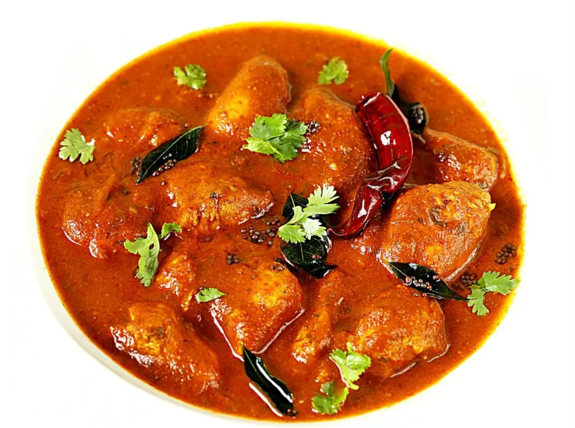

Chicken Madras Recipe

Chicken Madras Curry is a spicy, hot, tangy and slightly sweet curry.
- 1 tablespoon Madras curry powder
- 1 teaspoon garam masala
- 1/2 ot 1 teaspoon Kashmiri red chili powder
- 1 tabelspoon ginger garlic grated / crushed
- 2 tablespoons coriander leaves (handful leaves fine chopped)
- 1 1/2 tablespon lemon juice>
- 1/2 teaspoon sea salt
Steps to make Chicken Madras Curry
- Add 1/2 kg boneless chicken and marinate well. Cover and keep in the fridge until the curry sauce is ready.
- To make the curry sauce, pour in your oil on to a pan and saute the onions, carrots, ginger and garlic for 5 mins.
- Add tomatoes and bell peppers. Saute for 2-3 mins and pout 1 cup of water in.
- Bring to a boil and then turn down to medium heat. Cover and cook until the veggies are fully cooked through.
- Cool down and transfer to a blender. Blend to a smooth puree.